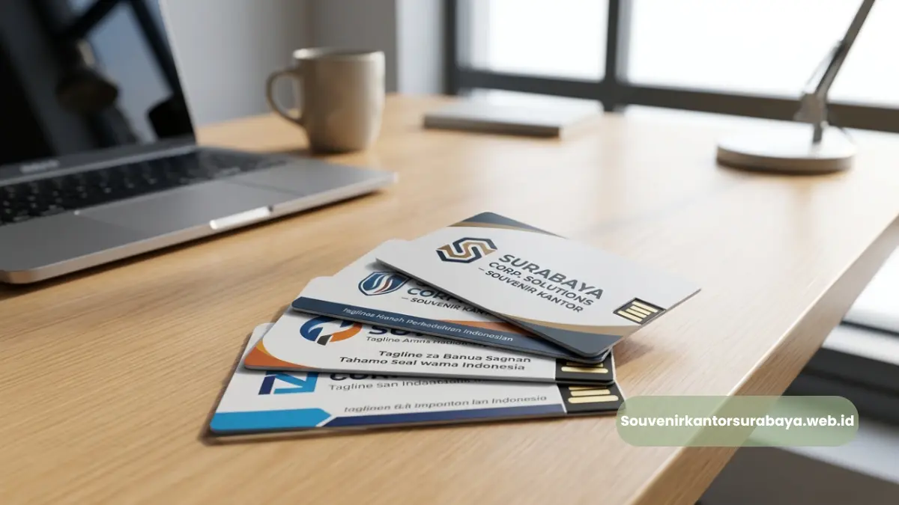
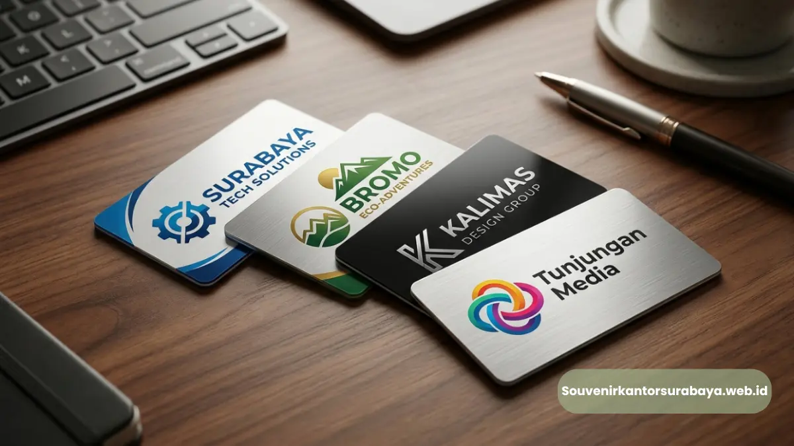
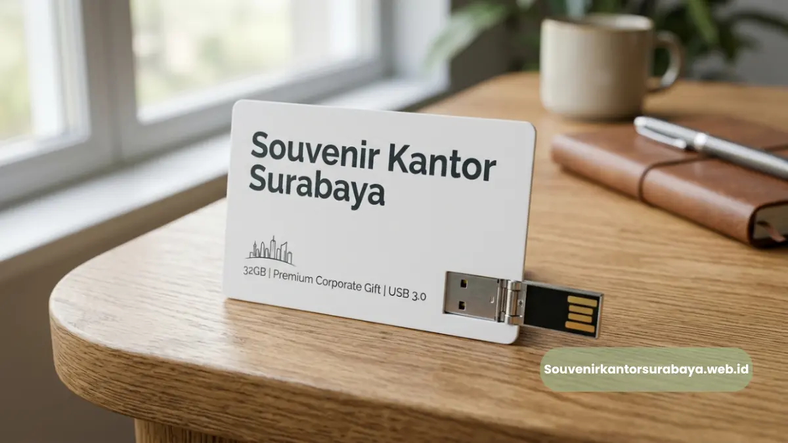
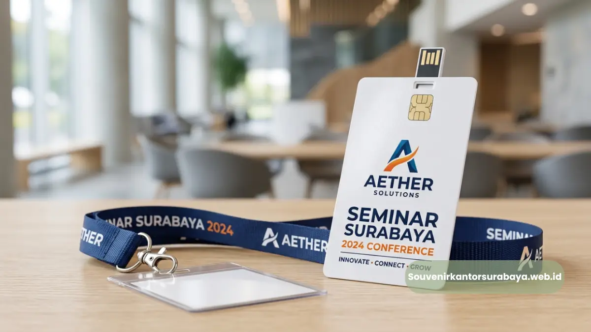

Manfaat flashdisk kartu custom logo sebagai media branding korporat yang efektif di Surabaya.
- Kenapa Custom Logo pada Flashdisk Kartu Penting untuk Branding?
- Apakah Logo Bisa Dicetak dengan Banyak Warna Sekaligus?
- Bagaimana Proses Cetak Logo pada Flashdisk Kartu Dilakukan?
- Format File Apa yang Dibutuhkan untuk Proses Cetak Logo?
- Elemen Visual Apa Saja yang Bisa Ditambahkan pada Flashdisk Kartu Custom?
- Manfaat Branding Melalui Souvenir Fungsional bagi Perusahaan di Surabaya
- Kesimpulan
Flashdisk kartu custom logo perusahaan Surabaya adalah layanan cetak logo full color pada flashdisk berbentuk kartu kapasitas besar sebagai media branding korporat.
Bagi tim marketing dan procurement di Surabaya, memilih souvenir kantor bukan hanya soal memberikan hadiah, tetapi juga strategi memperkuat identitas visual perusahaan.
Flashdisk kartu custom logo menjadi salah satu media branding yang efektif karena permukaannya yang luas dan rata memungkinkan logo perusahaan dicetak secara detail dan tajam, jauh lebih jelas dibanding souvenir berukuran kecil lainnya.
Hal ini menjadikan flashdisk kartu sebagai salah satu pilihan strategis bagi perusahaan yang ingin memaksimalkan eksposur logo melalui merchandise fungsional.
Baca Juga
Kenapa Custom Logo pada Flashdisk Kartu Penting untuk Branding?
Custom logo penting karena flashdisk kartu digunakan berulang kali dalam aktivitas kerja, sehingga logo perusahaan terus terekspos setiap kali perangkat digunakan oleh penerima.
Setiap kali flashdisk digunakan untuk menyimpan atau memindahkan data, pengguna secara otomatis melihat logo yang tercetak pada permukaannya.
Paparan berulang inilah yang membuat branding melalui souvenir fungsional jauh lebih efektif dibanding iklan konvensional yang hanya dilihat sekali.
Apakah Logo Bisa Dicetak dengan Banyak Warna Sekaligus?
Bisa, teknik cetak full color memungkinkan logo, tagline, dan elemen visual korporat dicetak dengan kombinasi warna sesuai identitas brand tanpa batasan jumlah warna.
Berbeda dengan metode cetak satu warna seperti emboss atau ukir, teknik full color printing pada flashdisk kartu memungkinkan reproduksi warna logo secara akurat, termasuk gradasi warna dan detail kecil pada desain corporate identity perusahaan.
Bagaimana Proses Cetak Logo pada Flashdisk Kartu Dilakukan?
Proses dimulai dari pengiriman file logo dalam format vektor, dilanjutkan dengan proof digital untuk persetujuan desain, sebelum masuk ke tahap produksi dan pencetakan massal.
Tahapan ini penting untuk memastikan hasil akhir logo pada flashdisk kartu sesuai dengan standar visual brand perusahaan.
Proof digital memungkinkan tim marketing melihat pratinjau hasil cetak sebelum proses produksi dalam jumlah besar dimulai, sehingga risiko kesalahan desain dapat minimalkan sejak awal.
Format File Apa yang Dibutuhkan untuk Proses Cetak Logo?
Format vektor seperti AI, EPS, atau PDF dengan resolusi tinggi umumnya dibutuhkan agar hasil cetak logo pada flashdisk kartu tetap tajam dan proporsional.
File berformat vektor memungkinkan logo diperbesar atau diperkecil tanpa mengurangi ketajaman gambar.
Jika file logo yang tersedia hanya dalam format gambar biasa, tim desain biasanya akan membantu proses vektorisasi terlebih dahulu sebelum masuk ke tahap cetak.

Teknik cetak full color pada flashdisk kartu memungkinkan reproduksi logo dan warna brand secara presisi.
Elemen Visual Apa Saja yang Bisa Ditambahkan pada Flashdisk Kartu Custom?
Selain logo utama, elemen seperti tagline perusahaan, nama acara, tahun penyelenggaraan, dan skema warna korporat juga dapat ditambahkan pada desain flashdisk kartu custom.
Penambahan elemen visual pendukung membantu memperkuat konteks pemberian souvenir, misalnya menyertakan tahun perayaan ulang tahun perusahaan atau nama acara tertentu, sehingga souvenir terasa lebih personal dan relevan dengan momen pemberiannya.
Manfaat Branding Melalui Souvenir Fungsional bagi Perusahaan di Surabaya
Branding melalui souvenir fungsional membantu perusahaan di Surabaya membangun kesan profesional sekaligus memperluas eksposur logo secara berkelanjutan tanpa biaya iklan berulang.
Dibandingkan iklan digital yang memerlukan biaya berkelanjutan untuk terus tampil di hadapan audiens, souvenir fungsional seperti flashdisk kartu hanya memerlukan investasi satu kali namun terus digunakan dalam jangka waktu panjang oleh penerimanya, menjadikannya strategi branding yang efisien dari sisi anggaran.

Hawa Nadira
Tim penulis CorporateGifts ID berfokus pada strategi souvenir kantor, merchandise korporat, dan inovasi brand untuk klien B2B.
Keahlian: Branding perusahaan, produksi souvenir, paket event, desain materi promosi.
Artikel Terkait

Flashdisk Kartu Kapasitas Besar
Pilihan flashdisk kartu kapasitas besar di Surabaya dengan custom logo perusahaan untuk souvenir kantor premium.
Baca Selengkapnya
Flashdisk Kartu Souvenir Seminar
Flashdisk kartu berbentuk kartu kapasitas besar untuk materi seminar dan souvenir korporat.
Baca SelengkapnyaSouvenir Kantor Custom Logo
Strategi souvenir kantor custom logo untuk memperkuat identitas brand perusahaan di Surabaya.
Baca Selengkapnya